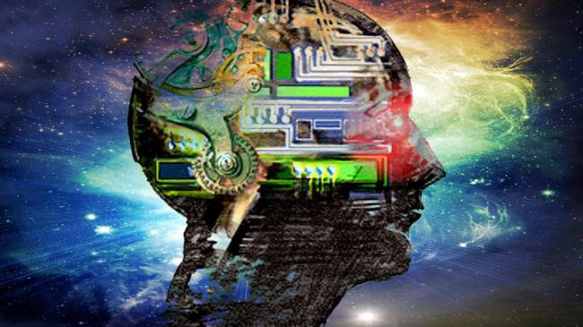

Історія
Історія штучного інтелекту, як вчення про розвиток сучасної науки і технології створення інтелектуальних машин, має своє коріння в ранніх філософських дослідженнях природи людини і процесу пізнання світу, розширених пізніше нейрофізіологами і психологами у вигляді ряду теорій щодо роботи людського мозку і мислення. Сучасній стадією розвитку науки про штучний інтелект є розвиток фундаменту математичної теорії обчислень, теорії алгоритмів і створення комп'ютерів.
Читати далі

Напрями досліджень
Аналізуючи історію ШІ, можна виділити такий обширний напрям як моделювання міркувань. Багато років розвиток цієї науки просувався саме цим шляхом, і зараз це одна з найрозвиненіших областей в сучасному ШІ. Моделювання міркувань має на увазі створення символьних систем, на вході яких поставлена деяка задача, а на виході очікується її розв'язок.
Читати далі
Розвиток
Єдиної відповіді на питання чим займається штучний інтелект (ШІ), не існує. Майже кожен автор, який пише книгу про штучний інтелект, відштовхується від якогось визначення, розглядаючи в його світлі досягнення цієї науки. Зазвичай ці визначення зводяться до наступних: штучний інтелект вивчає методи розв'язання задач, які потребують людського розуміння.
Читати далі
Історія
Історія штучного інтелекту, як вчення про розвиток сучасної науки і технології створення інтелектуальних машин, має своє коріння в ранніх філософських дослідженнях природи людини і процесу пізнання світу, розширених пізніше нейрофізіологами і психологами у вигляді ряду теорій щодо роботи людського мозку і мислення. Сучасній стадією розвитку науки про штучний інтелект є розвиток фундаменту математичної теорії обчислень, теорії алгоритмів і створення комп'ютерів.
Перша робота, яка тепер за загальним визнанням вважається що відноситься до штучного інтелекту, була виконана Уорреном Мак-Каллоком і Уолтером Піттсом. Вони черпали натхнення з трьох джерел: знання основ фізіології і призначення нейронів в мозку; формальний аналіз логіки висловлювань, узятий з робіт Рассела й Уайтхеда, а також теорія обчислень Тьюринга.
Напрями досліджень
Аналізуючи історію ШІ, можна виділити такий обширний напрям як моделювання міркувань. Багато років розвиток цієї науки просувався саме цим шляхом, і зараз це одна з найрозвиненіших областей в сучасному ШІ. Моделювання міркувань має на увазі створення символьних систем, на вході яких поставлена деяка задача, а на виході
очікується її розв'язок.
Як правило, запропонована задача уже формалізована, тобто переведена в математичну форму, але або не має алгоритму розв'язання, або цей алгоритм за складний, трудомісткий і т. д. В цей напрям входять: доведення теорем, прийняття рішеньі теорія ігор, планування і диспетчеризація, прогнозування.
Розвиток
Єдиної відповіді на питання чим займається штучний інтелект (ШІ), не існує. Майже кожен автор, який пише книгу про штучний інтелект, відштовхується від якогось визначення, розглядаючи в його світлі досягнення цієї науки. Зазвичай ці визначення зводяться до наступних: штучний інтелект вивчає методи розв'язання задач, які потребують людського розуміння.
Грубо кажучи мова іде про те, щоб навчити ШІ розв'язувати тести інтелекту. Це передбачає розвиток способів розв'язання задач за аналогією, методів дедукції та індукції, накопичення базових знань і вміння їх використовувати. Штучний інтелект вивчає методи розв'язання задач, для яких не існує способів розв'язання або вони не коректні (через обмеження в часі, пам'яті тощо). Завдяки такому визначенню інтелектуальні алгоритми часто використовуються для розв'язання NP-повних задач, наприклад, задачі комівояжера.